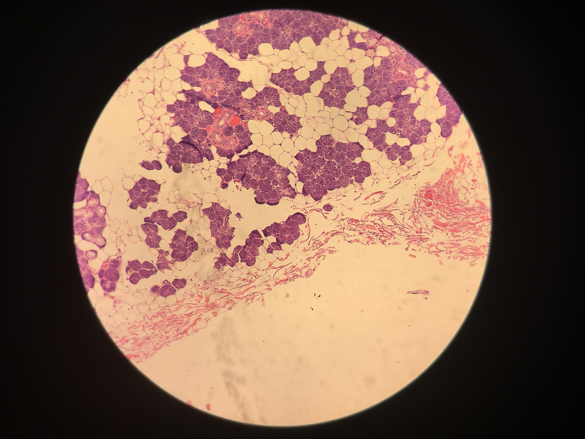
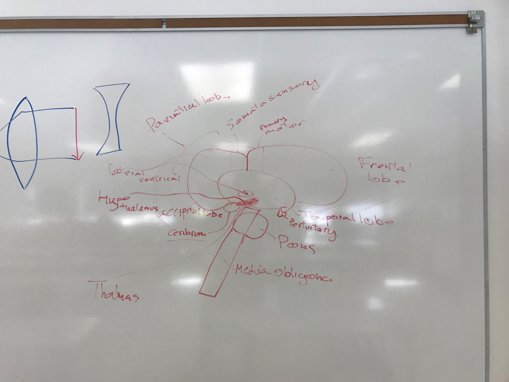

Adam's academic journey took a relitively normal route until a few weeks into grade 8 where he became too bored with school and skipped the rest of the year. He came back to a different junior high for grade 9.
It was during this year of homeschooling that Adam worked with a Microbiology prof to hone in his microscope skills and understanding of moder desieses.
Excelling in the IB program at Ross Sheppard High School was his next step where he maintained honour with distinction. His claim to fame their was graduating 8 months early and convincing a teacher to raise his mark by 40% in just a few hours of chit chatting.
The next step for Adam is studying Political Science at the University of Alberta.